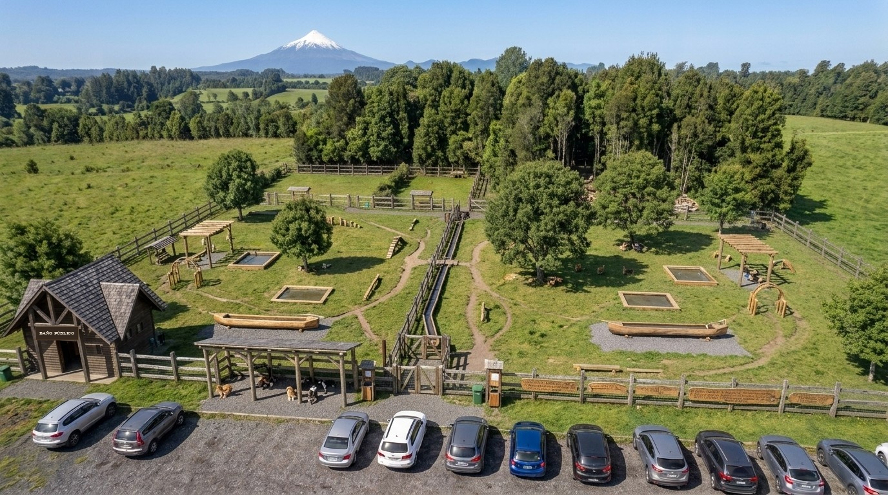
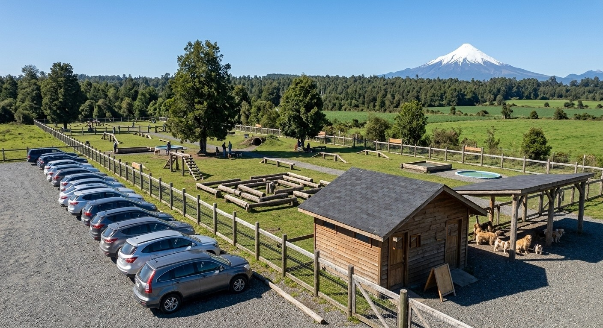
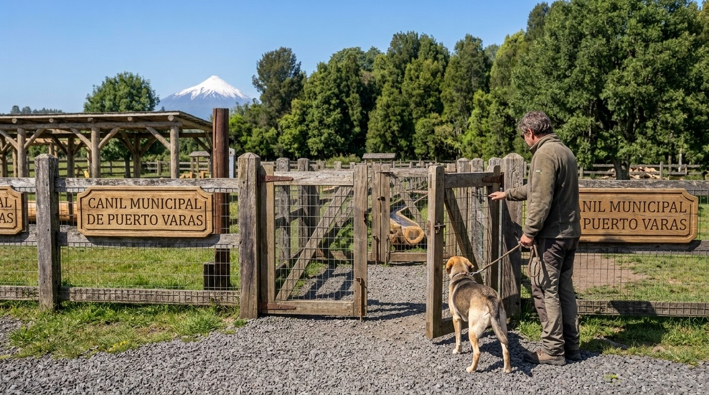
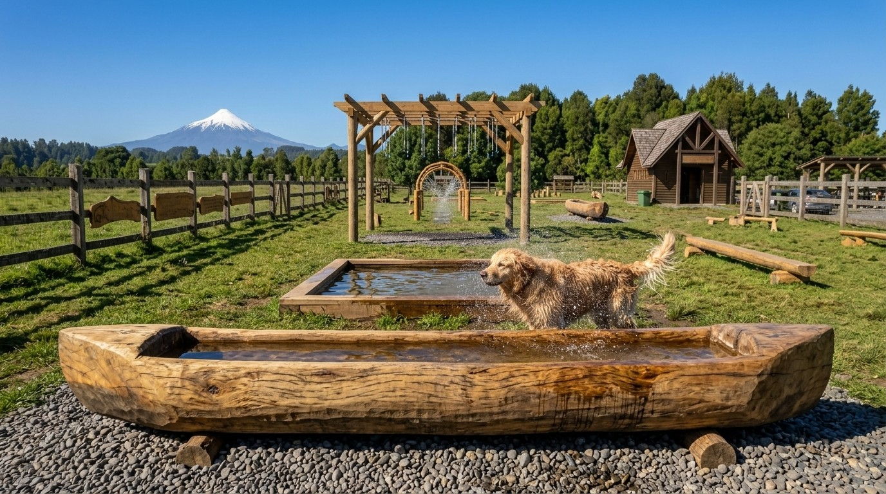

Tres caniles de una hectárea en los sectores centro, sur y norte, con terrenos fiscales usados tal como están, madera y áridos de la zona, agua de pozo y operación automática. Se parte con un canil piloto.
El plan propone tres caniles públicos de una hectárea en los sectores centro, sur y norte de Puerto Varas, partiendo con un canil piloto. Hoy la comuna no tiene ningún canil público.
Cada canil se emplaza en un terreno fiscal que se usa tal como está: la cerca se ubica entre los árboles existentes, en pradera o en mitad pradera y mitad bosque, sin movimientos de tierra ni despeje. Los materiales principales son los que abundan en la zona —madera, pasto, tierra y arena volcánica— y el agua sale de un pozo propio con bomba solar, complementado con el agua lluvia que recogen los techos.
Cada recinto tiene un sector libre para perros grandes, un sector libre para perros pequeños, cachorros y viejitos, dos sectores de entrenamiento para perros complicados, baño público amplio para entrar con el perro, zona de amarre techada, bebederos y sistemas de refresco de madera, cámaras con audio, iluminación solar y un tótem de emergencia disponible las 24 horas desde fuera del cerco.
El canil funciona de forma automática de 6:00 a 21:00, sin personal en terreno: apertura y cierre con cerraduras solares temporizadas, aviso de cierre por parlante a las 20:45 y salida siempre libre desde adentro. El único personal permanente es de aseo y mantención. La vigilancia remota la hace la central municipal que ya existe y la atención veterinaria, el veterinario municipal que ya está en funciones.
Descongestionar playas, costanera y plazas, donde hoy conviven a la fuerza quienes pasean perros y quienes prefieren no estar cerca de ellos; mejorar la higiene de los espacios públicos concentrando las fecas donde sí se recogen; fortalecer la tenencia responsable con registro, vacunación y entrenamiento; contribuir a reducir los ataques de perros a ganado y fauna, donde la Región de Los Lagos encabeza las denuncias del país; y sumar un panorama nuevo para residentes y turistas que viajan con su mascota.
Ninguna comuna del sur de Chile tiene hoy una red de caniles de este tipo: recintos grandes, de bajo costo, construidos con madera y áridos del propio lugar, sin movimiento de tierra y con operación automática. Puerto Varas ya ha sido pionera en otras materias; con este plan lo sería también en espacios públicos para perros.
El presupuesto de cada canil se formula y se ejecuta por separado. Del costo total, una parte puede resolverse con recursos que el municipio ya tiene —madera de árboles que retira de todos modos, cuadrillas propias, el trabajo del liceo técnico de la zona y bienes disponibles en la Plataforma de Economía Circular de Mercado Público—, y el resto es desembolso efectivo.
Puerto Varas creció, la cantidad de perros creció con la comuna y los espacios públicos siguen siendo los mismos. El canil viene a ser la infraestructura que falta para que perros y personas usen la ciudad sin estorbarse.
Chile tiene entre 7 y 8,3 millones de perros con dueño. Puerto Varas llegó a 52.942 habitantes en el Censo 2024, un 19% más que en 2017, y ese tamaño proyecta entre 20.000 y 24.000 perros en la comuna. Sin ningún espacio dedicado, toda esa demanda termina donde hay pasto y espacio: la costanera, las playas y las plazas, que son justamente los lugares donde también van personas a las que no les gustan los perros, adultos mayores y niños pequeños.
En 2023 el sistema de salud registró 60.986 atenciones por mordeduras de perro en el país. Y el problema no es solo la mordedura: un estudio en plazas y parques de Santiago encontró huevos de Toxocara en el 13,5% de las muestras de fecas de perro, un parásito que permanece infectante durante años en suelos húmedos y templados como los del sur. Un canil no elimina las fecas, pero las concentra en un lugar donde hay bolsas, basureros, aseo diario y una regla clara de recogerlas, en vez de dejarlas repartidas por toda la ciudad.
En el Registro Nacional de Mascotas hay 3.013.954 animales inscritos, de los cuales 2.113.739 son perros: cerca del 30% del total estimado del país. Al mismo tiempo, entre 2019 y 2024 las empresas de adiestramiento, guardería y paseo crecieron 203,8% y sus ventas 271,7%. Hay demanda por hacer las cosas bien; lo que falta es dónde. El canil es el lugar natural para hacer operativos de chip y vacuna antirrábica, y para que los cursos de obediencia tengan un espacio cerrado y seguro.
Puerto Varas no tiene caniles públicos: la única oferta es un parque privado. El único recinto municipal moderno del sur del país está en Temuco, presentado por ese municipio en 2024 como la primera ecoplaza canina del sur de Chile, construida con plástico 100% reciclado, con juegos separados para perros grandes y pequeños, bebederos y dispensadores de bolsas. En el otro extremo, una sola comuna del país —Las Condes— tiene 37 caniles.
El SAG registra 888 denuncias por ataques de perros entre 2012 y 2026, y la Región de Los Lagos encabeza la lista con 181 casos. El servicio habla de perros de libre deambular, categoría que incluye perros domésticos con dueño que salen solos. En 2024 los perros causaron el 29% de la depredación de ganado del país. Un espacio supervisado, cerrado y con entrenamiento disponible contribuye a disminuir ese problema: los perros paseados, sanos y entrenados atacan menos —un estudio danés asocia el tiempo suelto y el entrenamiento con menor agresividad, sin llegar a probar causalidad—.
El destino Lago Llanquihue y Todos Los Santos alcanzó 81,3% de ocupación en la semana del 19 al 24 de enero de 2026, segundo entre 54 destinos del país, muy por encima del promedio nacional de 62,3%, con 199.255 pernoctaciones regionales en ese mes. El 77,2% de los viajes con mascota se hacen dentro del país y el mercado de mascotas en Chile se estima entre US$2.500 y US$2.610 millones en 2026. Un canil descongestiona la costanera en temporada alta y, además, se convierte en un panorama que la gente elige: Dinamarca incluye sus bosques cercados para perros en las guías turísticas.
Un estudio observacional sobre 3,8 millones de personas asoció tener perro con 24% menos mortalidad general y 31% menos mortalidad cardiovascular. En Puerto Varas la población de 60 años y más creció 45,9% desde 2017. Los parques para perros son el lugar más usado para ejercitar y socializar mascotas, y vivir cerca de uno aumenta la probabilidad de usarlo: por eso el plan propone un canil por sector y no uno solo en el centro.
Cada dólar invertido en parques devuelve al menos tres dólares en beneficios, según el Trust for Public Land. En este proyecto el terreno es fiscal, la madera y los áridos son de la zona, buena parte de la mano de obra puede ser municipal o del liceo técnico, y el recinto no genera cuentas de luz ni de agua durante toda su vida útil.
Implementar tres caniles públicos en los sectores centro, sur y norte de Puerto Varas, con materiales locales y mínima intervención del terreno, para mejorar la convivencia y la higiene en los espacios públicos y promover la tenencia responsable de mascotas.
Las metas se calculan sobre una población estimada de 21.925 perros en la comuna (promedio del rango 20.053–23.797), es decir unos 7.308 perros en el sector del canil piloto, y un uso proyectado del 10% de esos perros por semana. La línea base local se levanta antes de abrir; las metas definitivas se fijan con los equipos municipales en las mesas de trabajo.
| Indicador | Línea base | Meta año 1 | Meta año 3 | Cómo se mide |
|---|---|---|---|---|
| Visitas diarias | 0 | 104 | 125 | Contador automático |
| Visitas anuales | 0 | 38.108 | 45.729 | Contador automático |
| Reclamos por perros en playas, costanera y plazas | Por levantar | −15% | −30% | OIRS y Seguridad Pública |
| Fecas en recorridos de muestra | Por levantar | −20% | −35% | 5 recorridos fijos mensuales |
| Nuevas inscripciones en la comuna | 1.066 | 1.279 | 1.439 | Registro Nacional de Mascotas |
| Chips y antirrábicas aplicados en operativos | 0 | 200 | 250 | Veterinario municipal (4 operativos) |
| Mordeduras atendidas en la comuna | 175 | 166 | 157 | Seremi de Salud |
| Denuncias SAG por ataques en la comuna | Por levantar | −10% | −20% | SAG Los Lagos |
| Satisfacción de las personas usuarias (1 a 5) | — | 4,0 | 4,3 | Encuesta por código QR |
| Costo de operación por visita | — | $649 | $540 | Operación anual ÷ visitas |
Las metas de mordeduras y de inscripciones parten de cifras nacionales llevadas a la población de la comuna; las de reclamos, fecas y denuncias se expresan en variación porcentual porque su línea base se levanta durante la etapa 1. Antes de abrir el piloto se fija además la meta de uso que habilita la réplica en los sectores sur y norte.
Este plan es una propuesta base, sujeta a mejoras a través de reuniones con los profesionales técnicos que ya forman parte de la Municipalidad de Puerto Varas, en las áreas de medio ambiente, geografía, ecología y economía. Diseño, cantidades, costos, ubicación de terrenos y etapas se ajustarán según sus aportes.
El documento está escrito para que el municipio pueda tomarlo y trabajarlo: las cantidades están desglosadas, los precios tienen origen y fuente, los trámites están puestos como pasos del cronograma y las decisiones de diseño están explicadas. Lo que aquí se propone es un punto de partida ordenado, no una solución cerrada.
| Autor | Lukas Matías Muñoz Miranda |
| Entidad | Gestión y Logística LM SpA |
| Ámbito de trabajo | Gestión y compras públicas, con cobertura en todo Chile |
| Residencia | Puerto Varas, Región de Los Lagos |
| Contacto | gestionylogisticalm@gmail.com |
Tres años de trabajo en Mercado Público, en distintos ámbitos de gestión, respaldan la forma de este documento: el conocimiento de cómo se formulan, se compran y se ejecutan los proyectos del Estado es lo que ordena el presupuesto por partidas con origen y tipo de precio, y lo que define la secuencia de compra que aquí se propone —Plataforma de Economía Circular, Convenio Marco y, solo después, licitación—.
A esa experiencia se suman un año de estudios en Trabajo Social, que está detrás del componente comunitario del plan —participación de las juntas de vecinos, accesibilidad universal y reglas de convivencia que consideran también a quienes no tienen perro—, y un trabajo constante en materias de medio ambiente, cuidado animal y cohesión social, que son los tres ejes del proyecto.
Las referencias de diseño no vienen de un catálogo: provienen de la observación directa de recintos para perros en Estados Unidos y en Europa, donde este tipo de espacios está resuelto con soluciones simples, de bajo costo y bien integradas al paisaje. Ese es el estándar que este plan propone trasladar a Puerto Varas, adaptado a los materiales y al clima de la zona.
Se entrega a la Municipalidad de Puerto Varas un proyecto formulado: diseño, cantidades, presupuesto desglosado, cronograma, trámites identificados y modelo de operación. El autor queda a disposición para participar en las mesas técnicas, ajustar el presupuesto con las cotizaciones formales que se obtengan y colaborar en la preparación del expediente, con el objetivo de que la comuna cuente con un canil público en funcionamiento.
Todas las cifras usadas en el plan, ordenadas por tema, con su fuente y su año. En la introducción estas cifras sostienen argumentos; aquí están completas para que puedan revisarse una por una.
| Dato | Cifra | Fuente y año |
|---|---|---|
| Perros con dueño | 7 a 8,3 millones | Estudio Subdere – Universidad Católica, dic. 2021 |
| Perros sin supervisión | 3.461.104 | Estudio Subdere – UC, dic. 2021 |
| Mascotas inscritas en el Registro Nacional | 3.013.954 | Registro Nacional de Mascotas |
| Perros inscritos (≈30% del total estimado) | 2.113.739 | Registro Nacional de Mascotas |
| Hogares con gasto recurrente en mascotas | 2,7 millones (39,8%) | Encuesta de presupuestos familiares |
| Gasto mensual promedio por hogar | $60.100 (+62,7% real) | Encuesta de presupuestos familiares |
| Hogares que pagan servicios para mascotas | de 7,1% a 13,7% | Encuesta de presupuestos familiares |
| Tamaño del mercado de mascotas en Chile | US$2.500 a 2.610 millones | Cámara Nacional de Comercio, ago. 2026 |
| Empresas de adiestramiento, guardería y paseo | +203,8% | Registro de empresas, 2019–2024 |
| Ventas de esas empresas | +271,7% | Registro de empresas, 2019–2024 |
| Considera a su mascota miembro de la familia | 92,1% | Encuesta nacional de tenencia |
| Mascotas que salen solas a la calle | 19,8% | Encuesta nacional de tenencia |
| Mascotas que nunca salen | 56,6% | Encuesta nacional de tenencia |
| Dato | Cifra | Fuente y año |
|---|---|---|
| Atenciones por mordedura de perro | 60.986 | Ministerio de Salud, 2023 |
| Muertes por ataques de perros | 83 | Registros nacionales, 2002–2024 |
| Fecas de perro con huevos de Toxocara en plazas y parques de Santiago | 13,5% | Estudio publicado en 1999 |
| Reducción de mortalidad general asociada a tener perro | −24% | Metaanálisis observacional sobre 3,8 millones de personas |
| Reducción de mortalidad cardiovascular asociada | −31% | Metaanálisis observacional sobre 3,8 millones de personas |
| Dato | Cifra | Fuente y año |
|---|---|---|
| Denuncias por ataques de perros (19% de los ataques de carnívoros) | 888 | SAG, 2012–2026 |
| Denuncias en la Región de Los Lagos (primer lugar, empatada con Los Ríos) | 181 | SAG, 2012–2026 |
| Participación de los perros en la depredación de ganado | 29% | SAG, 2024 |
| Ataques del primer semestre de 2025 ocurridos en Los Lagos | 32 de 82 | Registro Gallagher, 2025 |
| Dato | Cifra | Fuente y año |
|---|---|---|
| Habitantes | 52.942 | Censo 2024 |
| Crecimiento de población desde 2017 | +19% | Censo 2024 |
| Crecimiento de la población de 60 años y más desde 2017 | +45,9% | Censo 2024 |
| Perros estimados en la comuna | 20.000 a 24.000 | Cálculo propio sobre población y tasas nacionales |
| Ocupación del destino Lago Llanquihue y Todos Los Santos (19 al 24 de enero), 2° de 54 destinos; promedio nacional 62,3% | 81,3% | Reporte de ocupación, enero 2026 |
| Pernoctaciones en la Región de Los Lagos | 199.255 | Estadísticas de alojamiento, enero 2026 |
| Caniles públicos existentes | 0 | Situación a septiembre de 2026 |
| Dato | Cifra | Fuente y año |
|---|---|---|
| Perros en el mundo | 900 millones | Estimaciones internacionales |
| Perros de libre deambulación | 70 a 75% | Estimaciones internacionales |
| Industria mundial de mascotas al 2030 (+45%) | > US$500 mil millones | Bloomberg Intelligence |
| Mercado de viajes con mascotas, 2024 a 2030 | US$2.400 a 4.000 millones | Grand View Research |
| Viajes con mascota que se hacen dentro del país | 77,2% | Grand View Research |
| Viajeros para quienes poder llevar su mascota influye en el destino | 42% | Booking |
| Retorno por cada US$1 invertido en parques | al menos US$3 | Trust for Public Land |
| Parques para perros por 100 mil habitantes en Boise, mejor ciudad de EE. UU. en la materia | 9,0 | Ranking de parques para perros de EE. UU. |
| Dato | Cifra | Fuente y año |
|---|---|---|
| Recintos municipales modernos para perros en el sur de Chile | 1 (Temuco) | Municipalidad de Temuco, 2024 |
| Caniles en la comuna de Las Condes | 37 | Municipalidad de Las Condes, jul. 2026 |
| Zonas caninas en la comuna de Santiago | 11 | Municipalidad de Santiago, 2021 |
| Caniles por 100 mil habitantes que alcanzaría Puerto Varas con este plan | 5,7 | Cálculo propio sobre Censo 2024 |
Son tres caniles de una hectárea, uno por sector —centro, sur y norte—, y la ejecución parte con un canil piloto que se mide antes de replicar. Esta sección es la secuencia de trabajo completa, de principio a fin.
El proyecto son catorce pasos, y el orden importa: cada uno necesita que el anterior esté resuelto. No se puede levantar topografía de un terreno que no se ha elegido, ni diseñar sin topografía, ni definir el financiamiento sin proyecto.
La secuencia es la del trabajo, no la del calendario. Los plazos de cada paso los define la municipalidad, que es la que conoce sus tiempos internos, la carga de sus equipos y la disponibilidad de sus recursos. Este documento no propone fechas ni duraciones.
| Paso | Qué se hace | Quién y con qué |
|---|---|---|
| 1 | Encontrar el terreno | Búsqueda conjunta con los equipos municipales de un paño que cumpla las condiciones de la sección 7. Se eligen tres, uno por sector, y se define cuál se construye primero. |
| 2 | Asegurar el terreno | Se obtiene el paño elegido por la vía más expedita de las disponibles según su origen, entre las que enumera la sección 7. |
| 3 | Topografía y estudio hidrogeológico | Se hacen sobre el terreno ya elegido. El hidrogeológico define la profundidad del pozo, que es la variable que más mueve el presupuesto. |
| 4 | Diseño de arquitectura y especialidades | Secplan y Dirección de Obras, o proyectista contratado. Incluye el cálculo estructural de la torre de agua. |
| 5 | Proyectos de especialidad y trámites | Proyecto sanitario y autorización de la Seremi de Salud, proyecto eléctrico fotovoltaico, derechos de agua ante la DGA, informe de terreno rural si corresponde y permiso de edificación de la DOM. |
| 6 | Participación ciudadana | Dideco con las juntas de vecinos de los tres sectores, y el concurso de mensajes en los colegios. |
| 7 | Definir el financiamiento | Con el expediente técnico terminado, la municipalidad define con qué recursos se ejecuta la obra entre las fuentes de la sección 18. |
| 8 | Comprar | Administración y Finanzas, en este orden: Plataforma de Economía Circular, Convenio Marco y, lo que no esté ahí, licitación o cotización local. |
| 9 | Fabricar en el liceo técnico | Bancas, juegos, tablas grabadas, tótems, bebederos, arcos y letreros, para que estén listos cuando la obra los necesite. |
| 10 | Construir | Los frentes de obra que detalla la sección 13. |
| 11 | Aprobar la ordenanza y el protocolo | Concejo Municipal y Asesoría Jurídica: ordenanza del canil, tratamiento de perros potencialmente peligrosos, protocolo ante incidentes y plazo de las grabaciones. Debe estar listo antes de abrir. |
| 12 | Recibir, probar y abrir | Pruebas de agua, energía, horarios, cámaras y parlantes con la central municipal; análisis del agua; recepción municipal; señalética de ruta y apertura. |
| 13 | Marcha blanca con medición | Se miden visitas, incidentes, consumos y estado de los materiales, con los indicadores de la sección 19. |
| 14 | Ajustar y replicar | Se corrige el proyecto tipo con lo aprendido y se construyen los caniles de los sectores sur y norte. |
Varios pasos pueden avanzar a la vez: la fabricación en el liceo y la participación ciudadana no dependen de los permisos. Lo que no puede alterarse es el orden de los que se habilitan entre sí.
Sin terreno no hay topografía, sin topografía no hay diseño, sin diseño no hay proyecto sanitario ni eléctrico, sin esos no hay permiso de edificación y sin permiso no se puede ejecutar. Por eso encontrar el terreno es el primer paso y no un trámite más: todo el cronograma cuelga de ahí. Es también la razón por la que las concesiones de los terrenos sur y norte se piden desde el comienzo, aunque esos caniles se construyan dos años después.
Partir con un piloto y medirlo es lo que hicieron las dos experiencias más comparables: Las Condes, la comuna con más caniles del país, inició su renovación con un piloto de cuatro recintos antes de llegar a 37, y Montevideo monitoreó su parque canino durante un año completo antes de replicarlo en otros barrios.
El diseño, los planos, las especificaciones técnicas y el presupuesto del canil piloto quedan como proyecto tipo de la municipalidad. Los caniles del sur y del norte se formulan a partir de ese mismo expediente, ajustando solo lo que cambie por terreno: eso reduce el costo de diseño y acorta los plazos de formulación de las etapas siguientes.
Cada canil ocupa una hectárea dentro del cerco y unos 600 m² fuera de ella, en un paño que se usa tal como está: sin despeje, sin nivelación y sin movimiento de tierra. La cerca se ubica entre los árboles existentes. Son tres paños, uno por sector, y elegirlos es la primera definición del proyecto: de ella dependen la topografía, el diseño, los proyectos de especialidad y el permiso de edificación.
| Condición | Qué se revisa |
|---|---|
| Disponibilidad | Terreno fiscal, municipal o en comodato, sin compra ni arriendo, utilizado en su estado actual. |
| Superficie | Desde una hectárea dentro del cerco, y hasta dos si el paño lo permite, más unos 800 m² fuera para el estacionamiento, el baño, la zona de amarre y el sendero hacia los sectores de entrenamiento. La superficie definitiva queda sujeta a evaluación del terreno disponible. |
| Acceso | Llegada en auto, a pie y en bicicleta, con camino en condiciones todo el año y espacio para unos quince estacionamientos fuera del cerco. |
| Pradera y árboles | Pradera para correr y árboles existentes para sombra. Sirve tanto un paño con un cuarto de bosque como uno mitad bosque y mitad pradera, o uno de pradera abierta con árboles aislados. |
| Drenaje | Terreno que drene bien en invierno, para que el recinto se pueda usar todo el año. |
| Distancia | Alejado de viviendas por los ladridos, y de plazas de niños y playas, sin quedar aislado del sector al que sirve. |
| Sin otros animales | Sin ganado en los predios colindantes, y sin bosque con fauna nativa sensible. Es la razón por la que un canil no puede instalarse en cualquier paño con árboles. |
| Agua | Napa que permita un pozo a profundidad razonable. Define el ítem más variable del presupuesto: cada diez metros adicionales de profundidad son $2,3 millones. Se confirma con el estudio hidrogeológico antes de perforar. |
| Señal y sol | Señal 4G o posibilidad de enlace satelital, y sol despejado en la zona de acceso, donde se instalan los paneles fotovoltaicos. |
Los trámites y la conexión a la red de agua potable no forman parte de estas condiciones: los primeros se realizan igual en cualquier paño y la segunda no se requiere, porque el abastecimiento es por pozo propio en todos los casos.
Una cancha de fútbol de medidas estándar —105 × 68 metros— ocupa 0,71 hectáreas, y el reglamento permite canchas de hasta 120 × 90 metros, es decir 1,08 hectáreas: más que el canil completo, con sus cinco sectores, el baño, el amarre y la torre de agua. Un recinto deportivo con cancha, graderías y estacionamiento ocupa varias hectáreas sin que a nadie le parezca desmedido.
La Municipalidad de Puerto Varas mantiene 70 hectáreas de áreas verdes entre Puerto Varas, Ensenada y Nueva Braunau. La hectárea del canil piloto equivale al 1,4% de esa superficie, y su mantención por metro cuadrado es considerablemente menor, porque el terreno se conserva tal como está: sin riego, sin corte intensivo de pasto y sin jardinería.
Por eso la hectárea es una referencia de diseño y no un límite. Si el paño disponible permite dos hectáreas, el canil puede ocuparlas: los sectores crecen en la misma proporción y el recinto gana espacio para correr, que es lo que más se aprovecha. La superficie definitiva se evalúa junto al municipio cuando se conozcan los paños.
| Sector | Qué resuelve | Particularidad del paño |
|---|---|---|
| Centro | Descongestiona directamente las playas, la costanera y las plazas, y atiende a residentes y turistas. | Acceso fácil desde la costanera; sector de perros grandes orientado lejos de viviendas y con franja de vegetación reforzada. |
| Sur | Cubre la población del sector sur, que hoy debe trasladarse al centro para pasear. | Prioriza paño con bosque disponible para el sendero olfativo. |
| Norte | Cubre la población del sector norte y el crecimiento urbano de la comuna. | Prioriza cercanía a recorridos de transporte público. |
El paño de cada canil puede provenir de cinco orígenes. El orden en que se revisan responde al tiempo de tramitación: el terreno municipal es la vía más rápida para el piloto, y las concesiones fiscales, que tardan más, se inician en paralelo para los caniles del sur y del norte.
| Origen | Cómo se dispone de él |
|---|---|
| Terreno municipal | Acuerdo del Concejo Municipal, sin trámite ante otro servicio. Es la vía más rápida y la preferente para el canil piloto. |
| Área verde del Plan Regulador | Superficie ya zonificada como área verde sin proyecto asignado. Es el uso de suelo que mejor calza con un canil y no requiere cambio de destino. |
| Inmueble fiscal | Concesión de uso gratuito ante el Ministerio de Bienes Nacionales: de corto plazo, de 1 a 5 años, para el piloto; de largo plazo, hasta 50 años, para los recintos definitivos. |
| Paño de otro servicio | Remanentes de proyectos de vivienda, faja ferroviaria o caminos, en poder de SERVIU, Ferrocarriles o Vialidad. Se obtienen por transferencia o comodato entre organismos del Estado. |
| Sitio abandonado privado | Comodato con el propietario, que obtiene a cambio un terreno cerrado, mantenido y en uso. Conviene mirar los paños amplios del borde urbano y de las localidades, no los eriazos del centro, que son chicos y están rodeados de viviendas. |
Sobre la vía fiscal hay una consideración de oportunidad que incide en los plazos. En septiembre de 2026 el Ministerio de Bienes Nacionales puso en venta, dentro del plan Se Busca Dueño, 234 inmuebles fiscales definidos como propiedades que no cumplen una función pública; once de ellos están en la Región de Los Lagos. Un inmueble en esa condición puede terminar vendido a un privado o entregado en concesión de uso gratuito para un proyecto comunitario, y lo segundo requiere solicitarlo antes de que el inmueble entre a licitación. Revisar cuáles de esos once se ubican en Puerto Varas o en comunas vecinas es, por lo tanto, una de las primeras gestiones de la búsqueda.
La selección se realiza en la mesa territorial y ambiental, cruzando el catastro municipal, el catastro de la propiedad fiscal y el registro de sitios no edificados y propiedades abandonadas. Se descartan los paños que no cumplan las condiciones de esta sección, se visitan los que queden y se elige uno por sector —centro, sur y norte—, definiendo además cuál de los tres se construye primero. Son los pasos 1 y 2 de la ruta del proyecto.
Una hectárea, 10.000 m², dividida en cinco zonas cercadas más las franjas de separación. Fuera del cerco quedan el estacionamiento, el baño público, la zona de amarre y el sendero independiente a los sectores de entrenamiento. Es la superficie de referencia: si el terreno disponible da para más, hasta unas dos hectáreas, la distribución crece en la misma proporción.
La referencia más cercana a lo que se propone son los bosques cercados para perros de Dinamarca: terrenos forestales junto a los pueblos, de gran superficie, usados tal como están, con bancas, agua y un baño en el estacionamiento, sin juegos de plástico ni superficies artificiales. Están incluidos en las guías turísticas del país. De ahí vienen tres decisiones de este diseño: la mínima intervención del terreno, el bosque como parte del recinto —el sendero olfativo— y el baño público en la zona de acceso.

| Zona | Superficie | Qué incluye |
|---|---|---|
| Acceso | 300 m² | Esclusa común de doble puerta, bebederos, tótems de bolsas y torre de agua. |
| Sector libre de perros grandes | 4.700 m² | Pradera para correr, juegos de troncos y sendero olfativo en el bosque. |
| Sector libre de pequeños, cachorros y viejitos | 1.800 m² | Juegos bajos, bancas con techo y sistema de refresco propio. |
| Dos sectores de entrenamiento para perros complicados | 2.600 m² | 1.300 m² cada uno, con acceso independiente y solo bebedero de flujo continuo. |
| Franjas de separación | 600 m² | Árboles y arbustos nativos existentes entre zonas. |
| Total dentro del cerco | 10.000 m² | Una hectárea |
| Fuera de la hectárea | ≈800 m² | Estacionamiento para unos 15 autos, baño público, zona de amarre techada y sendero independiente a los sectores de entrenamiento. |
La estructura es de postes de madera propios: la malla nunca se clava a los árboles. Sobre los postes va malla galvanizada, tres líneas de alambre tensor y un listón superior que además sostiene las tablas con mensajes. En todo el perímetro se entierra una barrera de 40 cm para que ningún perro escarbe por debajo.
| Elemento | Altura o cantidad | Detalle |
|---|---|---|
| Cerco de perros grandes, de entrenamiento y división grandes–pequeños | 1,8 m | Malla galvanizada sobre postes de madera, con barrera enterrada. |
| Perímetro del sector de pequeños | 1,2 m | Suficiente para el tamaño del sector y más económico. |
| Esclusas de doble puerta | 3 esclusas, 7 puertas | La común, con 3 puertas, da a grandes y a pequeños; cada sector de entrenamiento tiene la suya con 2 puertas. |
| Separación entre los dos sectores de entrenamiento | Arbustos o panel opaco | También quedan separados visualmente de los sectores libres. |
| Portón de mantención | 1 | Con candado, para el ingreso de vehículos de mantención. |
| Cerco móvil interior | ≈70 m | En el sector de grandes, para rotar el pasto en invierno y dejarlo recuperarse. |
La esclusa común se ubica en un costado y no en una esquina, para que los perros no se aglomeren en el ingreso: es el criterio estándar en el diseño de parques para perros, junto con la separación por tamaño, los juegos de troncos y los cauces de agua poco profundos que también se aplican aquí. Los sectores de entrenamiento tienen acceso independiente por otro costado, con su propio sendero desde el estacionamiento. Los postes se hacen con especies durables de los árboles retirados por el municipio; donde no haya madera durable disponible se usan anclajes galvanizados en la base. Toda la madera al alcance de los perros es libre de CCA, es decir, sin arsénico.
El baño público y la zona de amarre van fuera del cerco, junto al estacionamiento. Así se usa el baño sin entrar al recinto ni cruzar la esclusa con el perro, y quien solo pasa a dejar o recoger no necesita ingresar. Es además la ubicación que mantiene toda construcción fuera del terreno cercado, que se conserva tal como está.
El baño público es amplio, pensado para entrar con el perro: dos recintos universales con inodoro, lavamanos, grifería temporizada, jabón, portarrollos, toallas, barras de apoyo, gancho para la correa y basurero. La estructura es de madera; el sistema sanitario es fosa séptica con drenes o conexión a alcantarillado si existe, y el agua del lavamanos pasa por filtro y clorador. Las puertas se cierran automáticamente a las 21:00 y la salida siempre es libre.
Junto al baño, también fuera del cerco, está la zona de amarre techada, de 12 × 3 m, con argollas cada 3 metros, para dejar al perro mientras se usa el baño. Ya dentro del recinto, pasada la esclusa común de doble puerta, están los bebederos, los tótems de bolsas y los basureros.
Solo hay bancas para las personas: no se instalan mesas, porque el espacio está enfocado en los perros y las mesas atraen comida, que es la principal fuente de conflictos entre perros sueltos. Son 12 bancas: 5 en el sector de grandes, 3 en el de pequeños, 2 en el acceso y 1 en cada sector de entrenamiento. Hay tres techos pequeños de madera sobre bancas —en pequeños y en cada sector de entrenamiento—; en el sector de grandes las bancas van bajo los árboles.
Los juegos son de troncos, no de plástico: en el sector de grandes, 4 saltos, 6 tocones escalonados, 2 vigas de equilibrio, 2 rampas aprovechando lomas naturales y el sendero olfativo del bosque; en el de pequeños, 3 saltos bajos, un set de tocones y una viga baja.
Los dos recintos del baño son universales, con barras de apoyo. Desde el estacionamiento hasta las bancas de los sectores de grandes y de pequeños hay un sendero accesible de grava compactada, sin escalones. Las bancas tienen respaldo y altura de asiento cómoda para personas mayores, que son el grupo que más crece en la comuna. Los letreros usan tipografía grande y lectura fácil, y llevan un código QR con la misma información.
En lugar de carteles sobre postes, el canil lleva 20 mensajes grabados en la cerca perimetral: tablas de madera de doble cara, con letras en bajo relieve rellenas en color y barnizadas, montadas al ras en la parte superior del cerco, una cada 20 metros aproximadamente. Los textos tratan sobre cuidado y maltrato animal, y son fabricados e instalados por el mismo equipo del proyecto. El contenido de los 20 mensajes está por definir; la propuesta de cómo definirlos está en el anexo A.
Los tótems de bolsas son de madera, van en el acceso y en cada sector junto a un basurero, entregan una bolsa compostable a la vez y llevan un mensaje único, definido en el anexo A.
El agua sale de un pozo propio, con bomba solar y paneles dedicados, dimensionada para el verano. El agua lluvia complementa el sistema y reduce el bombeo.
Los techos del baño, de la zona de amarre y de las pérgolas llevan canaletas que conducen el agua lluvia a un estanque elevado. El estanque son dos unidades de 5.500 litros —11.000 litros en total— montadas sobre una torre de madera de unos 4 metros con escalera de acceso, calculada estructuralmente porque sostiene once toneladas de agua. Desde ahí la distribución es por gravedad, sin consumo eléctrico.
Los sectores libres de grandes y de pequeños tienen los cinco sistemas, todos de madera:
Los dos sectores de entrenamiento tienen solo bebedero de flujo continuo: en esos recintos el agua compartida y el juego son focos de conflicto.
El pozo con bomba solar hace que el canil no dependa de la red de agua potable ni de un empalme eléctrico, y elimina la cuenta mensual de agua. Es también lo que permite elegir el terreno por sus condiciones —pradera, bosque, distancia a viviendas— y no por dónde pasa la matriz.
El canil funciona de 6:00 a 21:00 sin personal en terreno. Todo lo que abre, cierra, avisa, ilumina y vigila es automático o remoto.
| Sistema | Cantidad | Detalle |
|---|---|---|
| Cámaras | 7 | Visión nocturna y audio bidireccional: acceso —orientada también al estacionamiento—, esclusa común, dos en el sector de grandes, una en pequeños y una en cada sector de entrenamiento. Graban por movimiento. |
| Luminarias LED solares | ≈30 | Luz cálida dirigida al suelo, con sensor de movimiento, incluyendo el sendero a los sectores de entrenamiento. No se ilumina hacia el bosque ni hacia las casas. |
| Sistema solar central | 1 | Con baterías dimensionadas para invierno y red eléctrica de respaldo si hay conexión cercana. Los equipos van protegidos en la zona de acceso, fuera del alcance de los perros. |
| Conectividad | 1 | Router 4G y una o dos antenas wifi: una sola conexión por canil, que sirve a cámaras, cerraduras, parlantes y contadores. |
| Cerraduras solares con temporizador | 5 | Tres esclusas y las dos puertas del baño. |
| Parlantes | 2 | Aviso de cierre y comunicación desde la central municipal. |
| Contadores automáticos de visitas | 3 | Base de la medición de uso y del costo por visita. |
| Tótem SOS solar | 1 | Disponible 24 horas desde fuera del cerco, con tres botones. |
Tres botones, sin teléfono de por medio: (1) emergencias —131 Ambulancia, 132 Bomberos, 133 Carabineros—; (2) seguridad municipal; (3) veterinario municipal, que ya existe y por lo tanto no requiere convenio nuevo. Funciona las 24 horas y desde fuera del cerco, de modo que sirve incluso con el canil cerrado.
El plazo de conservación de las grabaciones y quién puede acceder a ellas se definen con la Asesoría Jurídica municipal antes de la puesta en marcha. En el acceso se instala el letrero de zona videovigilada. Los letreros llevan además un código QR para reportar daños y evaluar el recinto, que alimenta el indicador de satisfacción.
El único personal permanente en terreno es de aseo y mantención: dos auxiliares en turnos que cubren los siete días de la semana —fecas, basureros, baño, reposición de bolsas y bebederos— más una cuadrilla municipal una vez al mes para cercos, juegos, madera, paneles, estanque, zanjas y limpieza de los paneles solares. La vigilancia remota la hace la central municipal existente y la atención veterinaria, el veterinario municipal.
Dos reglamentos: uno general para los sectores libres y uno específico, más estricto, para los sectores de entrenamiento de perros complicados.
Las reglas van en un letrero a la entrada de cada sector. No hay sistema de reserva: cada sector tiene un letrero de OCUPADO / LIBRE que el propio usuario cambia al entrar y al salir.
Los dos sectores de entrenamiento sirven para tres usos: trabajo individual de tutores con perros reactivos, cursos de obediencia dictados por entrenadores, y los cursos de adiestramiento que la Ley 21.020 exige a los tenedores de perros potencialmente peligrosos. Temuco ya opera una escuela municipal de adiestramiento con obediencia básica abierta a la comunidad: el mismo esquema puede aplicarse aquí, con cursos gratuitos periódicos y cupos por inscripción. Los cursos pueden dictarse por convenio con una organización sin fines de lucro inscrita en el registro de promotoras de la tenencia responsable, de modo que no recaigan en la operación del canil.
Aunque el diseño reduce el riesgo —separación por tamaño, sin mesas ni comida, sectores independientes para perros complicados—, el reglamento define qué hacer si ocurre un incidente:
El reglamento se formaliza en una ordenanza municipal del canil, que le da respaldo legal a las reglas y a la fiscalización. En paralelo, la Asesoría Jurídica define el tratamiento de los perros potencialmente peligrosos dentro del recinto. El canil se usa además como sede de operativos periódicos de chip y vacuna antirrábica del veterinario municipal.
El criterio es simple: primero lo que ya existe en el terreno, después lo que aportan otras instituciones, después lo que se recupera, y solo al final lo que hay que comprar.
La elección de la madera no es solo económica. Puerto Varas es una ciudad construida en madera y reconocida por eso. Por el Decreto Supremo 290 del 4 de junio de 1992 se declaró Zona Típica un sector de unas 13 hectáreas de la ciudad y, junto con ello, diez inmuebles fueron declarados Monumentos Históricos; en 2014, el Decreto 419 amplió el área y sumó 67 nuevos inmuebles de interés patrimonial. Las casas patrimoniales de la colonización alemana se levantaron con maderas nativas —canelo, coigüe, tepa— y se revistieron con tejuelas de alerce y tinglado de madera. La Iglesia del Sagrado Corazón de Jesús, el edificio más reconocible de la ciudad, se construyó íntegramente en maderas nativas siguiendo los planos de una iglesia de la Selva Negra alemana.
Ese sello se extendió a todo lo demás: hoteles, restaurantes, cafeterías, miradores, señalética turística y mobiliario urbano de la comuna usan madera a la vista y terminaciones rústicas, porque es lo que la ciudad reconoce como propio y lo que el visitante viene a ver. Un canil de madera, troncos y grava volcánica, con cercos entre los árboles y sin estructuras plásticas de colores, se ve como Puerto Varas: queda integrado al paisaje y al carácter arquitectónico de la comuna, en lugar de competir con él. Es la diferencia entre un recinto que se siente parte de la ciudad y uno que se siente pegado encima.
Tres precisiones técnicas sobre esa decisión. Primero, no se usa alerce: es una especie protegida como Monumento Natural y no puede talarse; las tejuelas de las casas patrimoniales provienen de otra época y de madera muerta autorizada. Segundo, la madera del proyecto viene de árboles que el municipio retira igual —por temporal, riesgo o poda— y de madera recuperada, no de tala nueva. Tercero, toda la madera al alcance de los perros es libre de CCA, sin arsénico, y las piezas que tocan agua están diseñadas para reemplazarse fácilmente.
La mano de obra especializada del proyecto —jefe de obra, carpinteros, gasfíter, electricista, prevencionista, maquinaria y camión— se contrata en la zona. Sumada al aporte del liceo técnico y al trabajo de las cuadrillas municipales, significa que una parte importante del presupuesto se convierte en trabajo local y en aprendizaje para estudiantes de la comuna, en vez de salir hacia proveedores de otras regiones.
Todo lo que se compra pasa por el sistema de compras públicas. El orden de revisión es: primero la Plataforma de Economía Circular, para tomar gratuitamente bienes dados de baja —el contenedor bodega y parte de los basureros salen por ahí—; después Convenio Marco, que permite comprar con precios ya licitados y sin proceso adicional; y solo lo que no esté disponible por esas vías se licita o se cotiza en el mercado local. Ese orden es también el que permite verificar que los precios del presupuesto se cumplan al momento de ejecutar.
Todo lo que se necesita para construir un canil de una hectárea, con las cantidades que se usaron para calcular el presupuesto. Los precios, su origen y su fuente están en el documento 2.
Levantamiento topográfico y planos del terreno; diseño de arquitectura y especialidades, incluido el cálculo estructural de la torre de agua y el paisajismo; proyecto sanitario con proyectista inscrito y autorización de la Seremi de Salud; proyecto eléctrico fotovoltaico; derechos de agua ante la DGA; estudio hidrogeológico previo al pozo; informe de terreno rural si corresponde; permiso de edificación de la Dirección de Obras; participación ciudadana en los tres sectores; y análisis de laboratorio del agua del pozo como línea base.
Contenedor bodega —que se solicita por la Plataforma de Economía Circular—, baño químico para los trabajadores, cierre provisorio y letrero de obra. Equipos: generador de 5 kVA, dos motosierras profesionales, aserradero portátil para motosierra, ahoyadora a motor, tensador de alambre y placa compactadora. Herramientas: dos sierras circulares, cuatro taladros, niveles, huinchas, cuatro carretillas, palas, chuzos y escaleras. Equipo de protección personal para todo el equipo.
Las herramientas y equipos se compran una sola vez y se reutilizan en los caniles 2 y 3: ese ahorro está descontado en la proyección de los tres recintos.
| Elemento | Cantidad |
|---|---|
| Postes de madera de 2,7 m (cercos de 1,8 m) | ≈230 unidades |
| Postes de madera de 2,0 m (cerco de 1,2 m) | ≈50 unidades |
| Malla galvanizada, incluida la barrera enterrada de 40 cm y el cerco móvil | ≈1.800 m² |
| Alambre tensor, tres líneas | ≈2.150 m |
| Listón superior, que además sostiene las tablas grabadas | ≈650 m |
| Paneles opacos entre sectores de entrenamiento y sectores libres | ≈250 m² |
| Puertas de esclusa, con 21 bisagras, 7 cierres automáticos y 7 pestillos | 7 unidades |
| Portón de mantención con candado | 1 unidad |
| Tablas grabadas de doble cara con mensajes | 20 unidades |
| Cerco móvil interior para rotar el pasto | ≈70 m |
| Anclajes galvanizados de base, donde no haya madera durable | ≈84 unidades |
| Elemento | Cantidad |
|---|---|
| Baño público de dos recintos universales | 16 m² |
| Techo del baño con canaletas para captación de lluvia | ≈24 m² |
| Fosa séptica con drenes, o conexión a alcantarillado | 1 sistema |
| Filtro y clorador para el agua del lavamanos | 1 sistema |
| Zona de amarre techada, con 5 argollas cada 3 m | 12 × 3 m, techo ≈40 m² |
| Estacionamiento para unos 15 autos, grava de 15 cm | ≈375 m² |
| Senderos de grava compactada, 10 cm | ≈250 m² |
| Grava total del proyecto, incluidas bases y zanjas | ≈125 m³ |
| Elemento | Cantidad |
|---|---|
| Estanques sobre torre de madera de ≈4 m con escalera | 2 × 5.500 L |
| Canaletas de captación de lluvia, 4 bajadas y filtro de primeras aguas | ≈40 m |
| Pozo con bomba solar sumergible, paneles propios y caseta de protección | ≈40 m de profundidad |
| Bomba de presión pequeña, para aspersores y arcos | 1 unidad |
| Cañería enterrada, llaves de paso, electroválvulas y programador | ≈300 m · 10 llaves · 14 electroválvulas |
| Bebederos de flujo continuo en madera | 5 unidades |
| Pozas para chapotear, con lámina impermeable y válvula de vaciado | 2 de 3 × 2 m |
| Pérgolas con aspersores de gota gruesa | 2 de 4 × 4 m, 8 aspersores |
| Arcos rociadores de madera | 2 unidades, 12 boquillas |
| Canaletas tipo riachuelo | 2 de 10 m |
| Zanjas de infiltración con grava, tubo perforado y geotextil | ≈6 zanjas · 9 m³ · 30 m de tubo |
| Elemento | Cantidad |
|---|---|
| Sistema solar central con baterías, inversor, gabinete, protecciones y puesta a tierra | ≈2 kWp · ≈5 kWh |
| Router 4G y antenas wifi exteriores | 1 router · 1 a 2 antenas |
| Cámaras con visión nocturna y audio bidireccional, con panel propio las de los sectores | 7 unidades |
| Parlantes exteriores para el aviso de cierre | 2 unidades |
| Cerraduras solares con temporizador | 5 unidades |
| Luminarias LED solares con sensor, sobre postes de madera | ≈30 unidades |
| Tótem SOS solar de tres botones | 1 unidad |
| Contadores automáticos de visitas | 3 unidades |
| Elemento | Cantidad |
|---|---|
| Bancas de madera | 12 unidades |
| Techos pequeños sobre bancas | 3 unidades |
| Juegos de troncos, sector de grandes y sector de pequeños | 2 conjuntos |
| Tótems de bolsas con dispensador y basurero | 5 tótems · 1 contenedor mayor |
| Letreros: 3 de reglas, 2 de ocupado/libre, 1 de videovigilancia, 1 de entrada | 7 unidades |
| Señales de ruta hacia el canil desde playas y costanera | 4 unidades |
| Barniz e impregnante exterior para madera | ≈40 L |
No hay obra de paisajismo: no se retira ningún árbol y las franjas de separación son la vegetación nativa que ya existe en el paño. Lo único que se repone es lo que se pisa durante la construcción, con aproximadamente 5 m³ de compost municipal y 10 kg de semilla de pasto.
| Grupo | Integrantes |
|---|---|
| Profesionales | Arquitecto, topógrafo, proyectista sanitario, proyectista eléctrico y prevencionista de riesgos, más la inspección técnica de obra municipal. |
| Obra | Un jefe de obra o maestro carpintero, 3 carpinteros, 4 jornales de cuadrilla municipal, 1 gasfíter y 1 electricista autorizado. |
| Servicios | Retroexcavadora con operador, camión con chofer y empresa de perforación de pozo. |
| Aportes | Liceo técnico de la zona y cuadrillas municipales. |
Duraciones estimadas de cada etapa, no fechas. El calendario real —cuándo parte y en qué época del año se construye— lo define la municipalidad según sus tiempos internos. La obra no depende de una estación determinada.
| Etapa | Duración estimada | Qué se hace |
|---|---|---|
| Terreno | 2 a 3 meses | Búsqueda conjunta con los equipos municipales, elección de un paño por sector y obtención del paño del piloto por la vía que corresponda a su origen. |
| Estudios, diseño y trámites | 5 a 7 meses | Topografía y estudio hidrogeológico, diseño de arquitectura y especialidades, proyecto sanitario y eléctrico, derechos de agua, autorización sanitaria y permiso de edificación. |
| Fabricación en el liceo técnico | 5 a 7 meses | Corre en paralelo con los estudios y trámites: bancas, juegos de troncos, tablas grabadas, tótems, bebederos, arcos y letreros. |
| Participación ciudadana | en paralelo | Juntas de vecinos de los tres sectores y concurso de mensajes en los colegios. |
| Obra del piloto | 16 semanas | Los seis frentes de trabajo que detalla la tabla siguiente, con traslape entre ellos. |
| Marcha blanca con medición | 6 a 12 meses | Funcionamiento con medición de visitas, incidentes, consumos y estado de los materiales. |
| Ajustes y réplica | por definir | Corrección del proyecto tipo con lo aprendido y construcción de los caniles del sur y del norte. |
Son estimaciones de trabajo, no compromisos de plazo. Las etapas que dependen de tramitación municipal o de otros servicios pueden tomar más o menos tiempo según la carga de cada oficina, y esos tiempos los maneja la municipalidad.
Las semanas de esta tabla se cuentan desde el inicio de la obra, no desde una fecha determinada.
| Semanas | Frente de trabajo | Detalle |
|---|---|---|
| 1 a 2 | Instalación de faena y trazado | Bodega, baño químico, cierre provisorio, letrero, replanteo del cerco y de las zonas, aserrado de la madera municipal. |
| 3 a 8 | Cerco y esclusas | Postes, malla, barrera enterrada, alambre tensor, listón superior, paneles opacos, puertas de esclusa y portón de mantención. |
| 4 a 10 | Baño, amarre, torre y pozo | Perforación del pozo y prueba de bombeo, fosa séptica y drenes, estructura y terminaciones del baño, zona de amarre y torre de agua. |
| 8 a 12 | Agua, energía y cámaras | Cañerías enterradas, electroválvulas, bebederos, pozas, pérgolas, arcos, canaletas y zanjas; sistema solar, cámaras, parlantes, cerraduras, luminarias y tótem SOS. |
| 10 a 14 | Mobiliario y juegos | Instalación de bancas, techos, juegos de troncos, tótems, letreros y tablas grabadas; compost y resiembra de las zonas pisadas. |
| 15 a 16 | Pruebas y recepción | Prueba de riego y refresco, prueba de horarios y cerraduras, prueba de cámaras y parlantes con la central municipal, análisis del agua, recepción municipal y señalética de ruta. |
Los frentes se traslapan a propósito: mientras la cuadrilla avanza en el cerco, la empresa de perforación trabaja en el pozo y los carpinteros levantan el baño y la torre. El presupuesto considera cuatro meses de obra con este traslape.
El plan se trabaja en cuatro mesas con profesionales que ya forman parte de la Municipalidad de Puerto Varas. Secplan coordina, cada mesa tiene un responsable y las reuniones son periódicas.
| Mesa | Quiénes | Qué resuelve |
|---|---|---|
| 1. Territorial y ambiental | Geografía (con SIG), Medio Ambiente, Ecología. | Identifica y evalúa los terrenos fiscales de los tres sectores, revisa inundación, fauna sensible y vegetación existente, y propone el terreno del piloto. |
| 2. Técnica del proyecto | Secplan, Dirección de Obras, Economía junto a Administración y Finanzas, Asesoría Jurídica, Prevención de Riesgos. | Ajusta diseño, cantidades y presupuesto; ajusta el presupuesto y define el financiamiento; define la ordenanza y el tratamiento de perros potencialmente peligrosos; revisa seguridad de obra. |
| 3. Operación | Aseo y Ornato / Áreas Verdes, Seguridad Pública, Informática, veterinario municipal. | Define turnos de aseo, rutina de mantención, integración de cámaras y parlantes con la central municipal, conectividad y operativos veterinarios. |
| 4. Comunitaria | Dideco con las juntas de vecinos de los tres sectores, Turismo, Tránsito, Educación. | Participación ciudadana, convenio con el liceo técnico y con los colegios, señalización de rutas y difusión; incorporación del canil a la oferta turística de la comuna. |
El propósito de las mesas no es validar el documento, sino corregirlo. Todo lo que aquí se propone —superficies, cantidades, precios, ubicación y etapas— está escrito para que cada mesa lo revise con su criterio profesional y lo modifique donde corresponda.
Los trámites son pasos del cronograma, igual que levantar un cerco o perforar el pozo. Se hacen en el orden que corresponde y no condicionan la elección del terreno.
| Trámite | Ante quién | Cuándo y qué implica |
|---|---|---|
| Concesión de uso gratuito del terreno | Ministerio de Bienes Nacionales | De corto plazo para el piloto, de largo plazo para los terrenos sur y norte, que se tramitan en paralelo desde la etapa 2. |
| Derechos de aprovechamiento de aguas | Dirección General de Aguas | Para el pozo. Incluye publicaciones, aviso radial, visita e inscripción en el Conservador. |
| Autorización sanitaria | Seremi de Salud | Proyecto sanitario firmado por proyectista inscrito, para el baño público y el sistema de fosa séptica con drenes. |
| Informe de terreno rural | Seremi de Vivienda y SAG | Solo si el terreno elegido está fuera del límite urbano. |
| Permiso de edificación | Dirección de Obras Municipales | Para el baño y las estructuras. Gestión interna municipal. |
| Ordenanza municipal del canil | Concejo Municipal | Formaliza el reglamento de uso y habilita la fiscalización. |
| Definición sobre perros potencialmente peligrosos | Asesoría Jurídica municipal | Establece cómo se aplica la Ley 21.020 dentro del recinto y en los sectores de entrenamiento. |
Todos estos trámites son pasos de la ruta del proyecto y sus costos están incluidos en el presupuesto, en la partida de estudios y trámites.
El canil está diseñado para costar poco de operar: sin cuentas de luz ni de agua, sin personal de portería y con mantención concentrada en una visita mensual de cuadrilla.
El costo mensual a financiar es de $2.059.530, del cual el 65% corresponde a los dos auxiliares de aseo. El detalle ítem por ítem está en el documento 2.
Con los tres recintos funcionando, la operación puede organizarse en red: rutas de aseo que cubran más de un canil por turno, una sola cuadrilla mensual de mantención para los tres, compras de insumos consolidadas y un único contrato de datos. Eso reduce el costo por visita respecto de operar tres recintos por separado. La proyección de este plan es conservadora: calcula los tres caniles como si cada uno se operara de forma independiente, de modo que cualquier eficiencia de red es una mejora sobre lo presupuestado y no un supuesto del que dependa el proyecto.
El presupuesto completo, con desglose por partida, explicación de cada ítem, tiempos de ejecución y flujo mensual de gastos, es el documento 2 de esta propuesta. Aquí van los resultados.
| Concepto | Monto | Observación |
|---|---|---|
| Costo directo valorizado | $140.016.079 | Incluye los aportes en trabajo y materiales. |
| Aportes valorizados (municipio y liceo técnico) | −$25.145.853 | Recursos propios del municipio; no implican desembolso. |
| Costo directo a financiar | $114.870.226 | |
| Gastos generales (8%) | $9.189.618 | |
| Imprevistos (10%) | $12.405.984 | |
| Costo a desembolsar | $136.465.828 | Es la cifra que hay que financiar. |
| Valor total del proyecto, incluidos aportes | $161.611.681 | Lo que costaría sin los aportes del municipio y el liceo técnico. |
| Canil | A desembolsar | Aporte valorizado |
|---|---|---|
| Canil 1 · piloto (etapa 1) | $136.465.828 | $25.145.853 |
| Canil 2 (etapa 2) | $135.401.271 | $23.438.458 |
| Canil 3 (etapa 2) | $135.401.271 | $23.438.458 |
| Total | $407.268.370 | $72.022.769 |
Los caniles 2 y 3 descuentan las herramientas y el contenedor bodega, que se compran una sola vez, e incorporan un reajuste de 3,5% por inflación. Cada canil se formula y se ejecuta por separado.
El terreno es fiscal, así que no hay compra ni arriendo. La madera de postes, listones, paneles, torre, pérgolas, amarre, juegos y techos sale de árboles que el municipio retira de todos modos. Los cuatro jornales son cuadrilla municipal, $10.780.000 valorizados. Bancas, tótems, tablas, bebederos, arcos y letreros los fabrica el liceo técnico. El contenedor bodega y parte de los basureros salen de la Plataforma de Economía Circular. Y las herramientas se compran una vez para los tres caniles. A eso se suman ahorros potenciales adicionales: usar la grava del propio terreno —hasta $3,59 millones—, hacer el diseño con profesionales municipales —hasta $6 millones— y no tener cuentas de luz ni de agua durante toda la vida útil del recinto.
Lo que sí requiere desembolso: el baño público, el pozo y los derechos de agua, los trámites y proyectos de especialidad, la malla y la ferretería, el sistema solar y de seguridad, la mano de obra especializada, la maquinaria y el camión, los auxiliares de aseo, los insumos, el plan de datos, el análisis del agua, el seguro y la reposición de materiales. El detalle con montos está en el documento 2.
Medir desde el primer día es lo que permite replicar con confianza. El canil piloto nace con contador de visitas, indicadores definidos y una meta de uso fijada antes de abrir.
| Indicador | Responsable | Frecuencia |
|---|---|---|
| Visitas diarias, mensuales y anuales | Informática / Secplan | Lectura automática continua |
| Reclamos por perros en playas, costanera y plazas | OIRS y Seguridad Pública | Mensual |
| Fecas en recorridos de muestra | Aseo y Ornato | 5 recorridos fijos al mes |
| Nuevas inscripciones en el Registro Nacional de Mascotas | Veterinario municipal | Trimestral |
| Chips y vacunas antirrábicas aplicados | Veterinario municipal | Por operativo |
| Mordeduras atendidas en la comuna | Seremi de Salud | Anual |
| Denuncias por ataques de perros a animales | SAG Los Lagos | Anual |
| Satisfacción de personas usuarias | Encuesta por QR en los letreros | Continua |
| Percepción de vecinos del entorno y de personas sin perro | Dideco, con las juntas de vecinos | Semestral |
| Incidentes registrados en el recinto | Seguridad Pública | Mensual |
| Consumo de agua y energía, y estado de los materiales | Aseo y Ornato / Áreas Verdes | Mensual |
| Costo de operación por visita | Administración y Finanzas | Trimestral |
La medición de percepción incluye deliberadamente a quienes no tienen perro y a los vecinos del entorno inmediato del recinto: el objetivo del plan es mejorar la convivencia, y eso solo se puede verificar preguntándole también a quienes no usan el canil.
Antes de abrir el piloto, las mesas fijan la meta de uso que debe alcanzarse durante la marcha blanca para pasar a los caniles sur y norte. La referencia de este plan son 104 visitas diarias —38.108 al año—, equivalentes a que el 10% de los perros del sector visite el canil una vez por semana. Si el uso real se aleja mucho de esa cifra, la conversación no es solo si replicar, sino qué ajustar: ubicación, horario, difusión o diseño.
Con eso se corrige el proyecto tipo y se construyen los dos caniles restantes.
Los tótems de bolsas son de madera, entregan una bolsa compostable a la vez y van en el acceso y en cada sector, siempre junto a un basurero. El mensaje es el mismo en los cinco:
«Bolsas de emergencia para quienes “siempre la traen, pero justo hoy no”. Toma una. La próxima vez, sorpréndenos.»
El tono es deliberado: pide sin retar. Un mensaje amable funciona mejor que una prohibición en un lugar al que la gente va por gusto.
Son 20 tablas de madera de doble cara, con las letras en bajo relieve rellenas en color y barnizadas, montadas al ras en la parte superior del cerco perimetral, una cada 20 metros aproximadamente. Doble cara significa que se leen desde adentro y desde afuera del recinto. Tratan sobre cuidado y maltrato animal, y las fabrica e instala el mismo equipo del proyecto.
Los textos están por definir. Hay dos caminos, y no son excluyentes:
Convocar a los colegios de Puerto Varas a un concurso de mensajes sobre cuidado y maltrato animal. Los cursos trabajan el tema en clases —con apoyo del veterinario municipal y de las agrupaciones de protección animal—, escriben sus mensajes y los propios estudiantes eligen los mejores; un jurado con el municipio y la mesa comunitaria hace la selección final de los 20 que se graban en la cerca. Cada tabla puede llevar, en letra pequeña, el colegio y el curso que la escribió.
La ganancia es doble: los mensajes quedan escritos en el lenguaje de la comuna y no en el de un manual, y el proceso mismo enseña cuidado animal a los niños que después van a usar el canil con sus familias. Es, además, la forma más barata y más significativa de resolver el contenido de las 20 tablas.
Camino alternativo: si el concurso escolar no resulta viable en los plazos del proyecto, los 20 mensajes se definen junto a los funcionarios municipales correspondientes —veterinario municipal, Medio Ambiente, Dideco y Educación— antes de que el liceo técnico fabrique las tablas.
Textos listos para grabar en los siete letreros de madera del recinto. Todos llevan tipografía grande, lectura fácil y un código QR con la misma información y el formulario para reportar daños o evaluar.
Ante una emergencia, use el tótem SOS del acceso: botón 1, emergencias; botón 2, seguridad municipal; botón 3, veterinario municipal.
Cada sector lleva además un letrero giratorio de dos caras con OCUPADO y LIBRE, que el propio usuario cambia al entrar y al salir. No hay sistema de reserva.
«Zona videovigilada. Las imágenes se registran por movimiento y son administradas por la Municipalidad de Puerto Varas. Consultas y solicitudes: código QR.»
Nombre del canil, horario de 6:00 a 21:00, plano simple del recinto con los cinco sectores, indicación del baño y de la zona de amarre, teléfono del tótem SOS y código QR para reportar daños y evaluar el recinto.
Señalización desde las playas y la costanera hacia el canil, según la norma de Tránsito, para que quien hoy pasea en esos lugares sepa que existe una alternativa y cómo llegar. Su instalación se coordina con la Dirección de Tránsito en la mesa comunitaria.
Fuentes de las cifras y de los precedentes citados en este documento. Las fuentes de precios del presupuesto están en el documento 2.
Censo de Población y Vivienda 2024, Instituto Nacional de Estadísticas: población de Puerto Varas, variación desde 2017 y población de 60 años y más.
Estudio Subdere – Universidad Católica, diciembre de 2021: población canina nacional y perros sin supervisión. Registro Nacional de Mascotas: animales y perros inscritos. Encuesta de presupuestos familiares: hogares con gasto en mascotas y gasto mensual. Cámara Nacional de Comercio, agosto de 2026: tamaño del mercado de mascotas en Chile. Registro de empresas 2019–2024: crecimiento de empresas de adiestramiento, guardería y paseo y de sus ventas.
Ministerio de Salud, 2023: atenciones por mordedura de perro. Registros nacionales 2002–2024: muertes por ataques de perros. Estudio de contaminación parasitaria en plazas y parques de Santiago, 1999: presencia de huevos de Toxocara en fecas. Metaanálisis observacional sobre 3,8 millones de personas: asociación entre tenencia de perro y mortalidad.
Servicio Agrícola y Ganadero: denuncias por ataques de perros 2012–2026, distribución regional y participación de los perros en la depredación de ganado 2024. Registro Gallagher, primer semestre de 2025: distribución regional de ataques. Estudio danés sobre tiempo sin correa, entrenamiento y agresividad canina.
Reporte de ocupación del destino Lago Llanquihue y Todos Los Santos, enero de 2026. Estadísticas de alojamiento turístico de la Región de Los Lagos, enero de 2026. Grand View Research: mercado de viajes con mascotas 2024–2030 y proporción de viajes dentro del país. Booking: viajeros para quienes llevar su mascota influye en el destino. Bloomberg Intelligence: proyección de la industria mundial de mascotas al 2030.
Trust for Public Land: retorno de la inversión en parques. Ranking de parques para perros de ciudades de Estados Unidos: Boise. Municipalidad de Las Condes, julio de 2026: 37 caniles y piloto inicial de cuatro. Municipalidad de Santiago, 2021: 11 zonas caninas. Municipalidad de Temuco, 2024: primera ecoplaza canina del sur de Chile y escuela municipal de adiestramiento. Intendencia de Montevideo: monitoreo de un año del parque canino. Guías y normativa de bosques cercados para perros de Dinamarca.
Consejo de Monumentos Nacionales: Decreto Supremo 290 del 4 de junio de 1992, que declara Zona Típica el sector que indica de la ciudad de Puerto Varas —unas 13 hectáreas— y Monumentos Históricos a diez inmuebles; Decreto 419 del 18 de noviembre de 2014, que amplía el área y define 67 nuevos inmuebles de interés patrimonial. Municipalidad de Puerto Varas: capítulo de patrimonio del Plan Regulador Comunal. Antecedentes de arquitectura de la colonización alemana: uso de maderas nativas —canelo, coigüe, tepa—, tejuelas de alerce y la Iglesia del Sagrado Corazón de Jesús construida en maderas nativas.
Plataforma de Economía Circular de Mercado Público. Codelco Ventanas: 700 kg de madera en desuso transformados en bancas, barandas y basureros. Junín de los Andes y Asunción: aserrado y reutilización de árboles retirados por el municipio. Neuquén: convenio con liceo técnico para fabricación de mobiliario urbano.
Ministerio de Bienes Nacionales: plan «Se Busca Dueño», septiembre de 2026, con 234 inmuebles fiscales sin función pública a la venta, once de ellos en la Región de Los Lagos, y portal de licitaciones con visor georreferenciado. Ley 17.235 sobre Impuesto Territorial, artículo 8°, modificada por la Ley 20.033 de rentas municipales: sobretasa del 100% a sitios no edificados, propiedades abandonadas y pozos lastreros en áreas urbanas; Servicio de Impuestos Internos, sistema de usuario municipal para su revisión. Municipalidad de Puerto Varas: servicio de mantención de 70 hectáreas de áreas verdes y Dirección de Administración y Finanzas, a cargo del inventario de bienes inmuebles municipales. IFAB, Reglas de Juego, Regla 1: dimensiones de cancha de fútbol de 90 a 120 metros de largo por 45 a 90 de ancho.
Ley 21.020 sobre tenencia responsable de mascotas y animales de compañía. Dirección General de Aguas: derechos de aprovechamiento de aguas subterráneas. Seremi de Salud: aranceles y autorizaciones sanitarias.
Para la formulación definitiva, la mesa técnica solicita por oficio las cifras oficiales de mordeduras al Ministerio de Salud y de denuncias por ataques al SAG Los Lagos, referidas a la comuna, y las incorpora en reemplazo de las estimaciones nacionales llevadas a población comunal que usa este documento.
Cuatro vistas del canil tal como quedaría construido, generadas a partir del modelo tridimensional levantado con las medidas de este plan: una hectárea cercada, cercos de 1,8 y 1,2 metros, zona de amarre de 12 × 3 metros y estacionamiento para unos quince autos. Las proporciones entre los elementos son las del proyecto.



Las imágenes parten de un modelo tridimensional construido con las medidas de este plan, de modo que las proporciones entre el baño, el amarre, los juegos, el agua y la cancha de cada sector son las que efectivamente tendría el recinto. Son una representación del proyecto, no fotografías de una obra existente, y sirven para discutir el diseño en las mesas técnicas y para explicarlo a la comunidad.